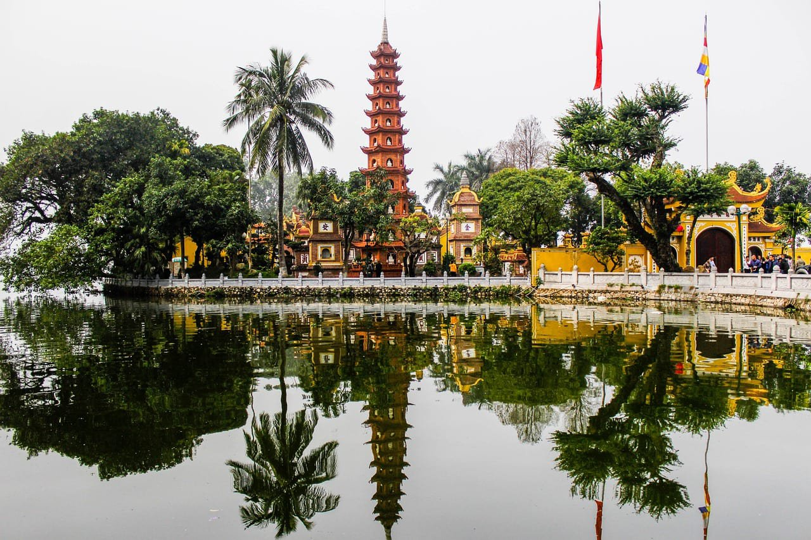
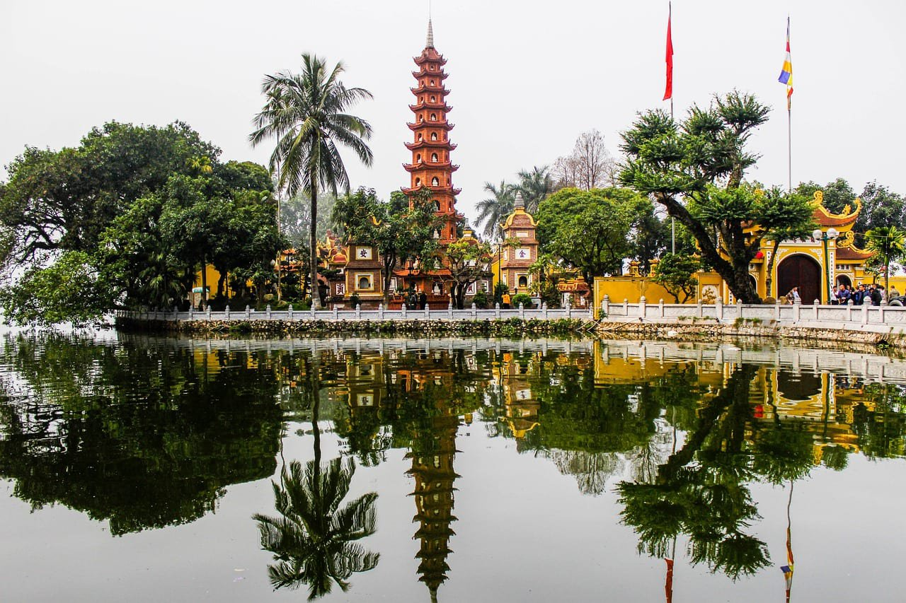
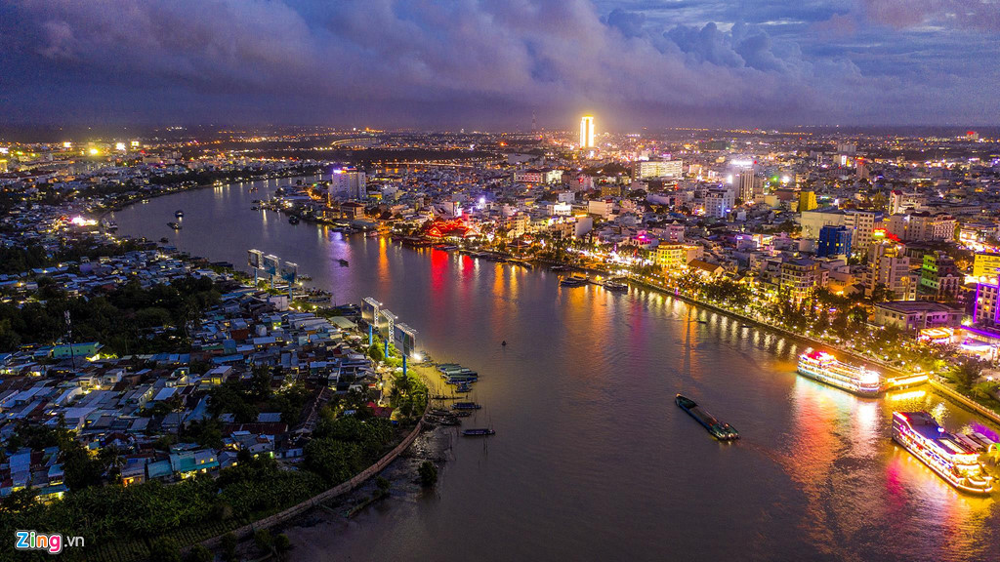
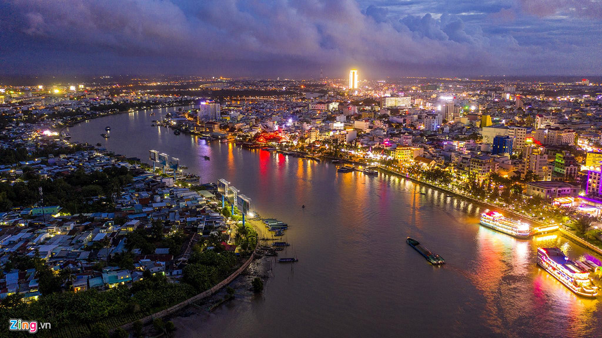

Sa Pa rice fields
In the North of Vietnam, in the province of Lào Cai, the rice fields of Sapa offer an idyllic setting for travellers. On the slopes of the mountains, terraced crops spread out as far as the eye can see, marking the landscape with colorful shades. Depending on the season, rice fields reveal a whole range of greens, take the color of the earth or gorge themselves with water. Sometimes, a morning mist protects this sight from the eyes of the visitors. In fine weather, when the day falls asleep, the light on the contrary magnifies it. To these landscapes are added the scenes of life of the Vietnamese countryside, in the heart of a region populated by ethnic minorities. The smiling Hmong women, with their big rings in their ears, will perhaps follow you a long way, with their basket filled with crafts...
Founded by the French in the 1920s, the Sapa climate station rises to 1650 meters above sea level. With a guide, it is necessary to plan a trek of several days to cross the rice fields, climb the mountain, meet the villagers accompanied by their buffalo, but also sleep at home. To get there: the months of March, April and May are ideal for hiking. August, September and October promise breathtaking landscapes.


 



 
